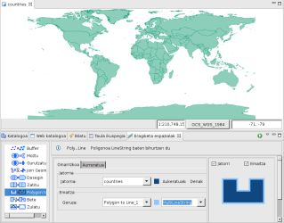
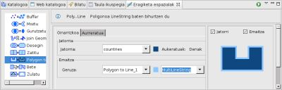
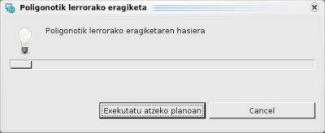
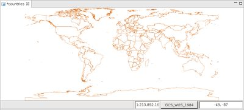
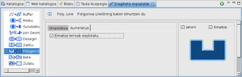

{kind=link}
{kind=link}
{kind=link}
{kind=link}
{kind=link}

6 irudia. Esplotatutako lerroak
Poligono geruza bat LineString motako geruza baten bihurtzen du.
Polygon to Line eragiketak jatorri geruzaren featureak hartzen ditu eta LineString featuretan bihurtzen ditu.
Emaitza geruza LineString edo MultiLineString motakoa izango da, jatorri geruzaren menpe egongo da, eta geruza berri bat edo dagoen bat izan daiteke.
Adibide honetan countries.shp geruzarekin Polygon to Line eragiketa burutuko dugu.

1 Irudia. Eragiketaren aurretik.
Eragiketa Espazialen Bistara goaz, eta Polygon to Line aukeratuko dugu Eragiketen menuan.
Polygon to Line Eragiketaren aukera espezifikoak agertzen dira.
Eragiketaren sarrerako balioak adierazi behar ditugu, 2 irudian agertzen den bezala:

2 irudia. Sarrerako eta emaitzako geruzak zehaztu.

3 irudia. Aurrerakuntza leihoa.
Eragiketa bukatzen denean, emaitza gordetzeko geruza berri bat sotu bada, jadaneko Marpara automatikoki gehitua izango da.
4 irudiak sortu berri den Geruza (Polygon to Line_1) erakusten du Mapari gehitua, Jatorri geruzaren bihurketa aplikatzearen emaitzako featurekin.

4 irudia. Emaitza Geruza.
Polygon to Line eragiketak poligonoak esplotatzearen aukera du, hau da, poligonoaren lerro segmentu bakoitza LineString feature bat izango da.

5 irudia. Esplotatu aukeratu.
Kasu honetan, Irlanda herria aukeratuko dugu eta esplotatu aukera txekeatu ondoren, eragiketa exekutatuko dugu emaitza bezala hurrengoa emanez:
6 irudia. Esplotatutako lerroak